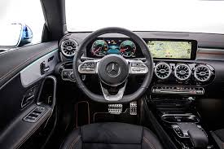
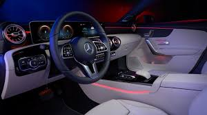
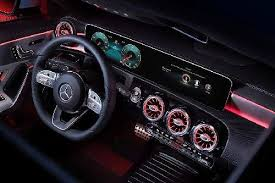
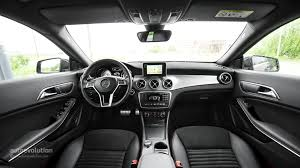
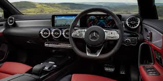
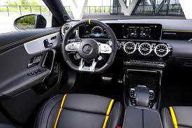

Mercedes CLA 200
The second generation CLA-Class was unveiled at the 2019 Consumer Electronics Show in January 2019. Based on the same Modular Front Architecture (MFA2) platform as the W177 A-Class, W247 B-Class, X247 GLB and H247 GLA the C118 CLA-Class retains the fastback styling to set it apart from the V177 A-Class Sedan and shares its powertrains with the A-Class. Stylistically, the design is inspired by the new design language Mercedes-Benz adopted for the C257 CLS-Class.
The C118 has an almost completely flat underbody, resulting in a drag coefficient as low as 0.23. It uses front MacPherson struts in combination with either a twist beam or multi-link at the rear, and the option of adaptive dampers. Compared to its predecessor, the C118 is 48 mm (1.9 in) longer, 53 mm (2.1 in) wider and loses 2 mm (0.079 in) in height, while its wheelbase has been extended by 30 mm (1.2 in).
All models feature the Mercedes-Benz User Experience (MBUX) infotainment system, including the "Hey Mercedes" voice-controlled assistant and a new Interior Assist gesture control system. Standard models feature two 7-inch displays for the instrument cluster and MBUX screen, and can be upgraded to 10.25-inch screens, a full-color head-up display, adaptive cruise control, active steering assist, and active brake assist.


CAR INTERIOR
    
| FEATURE | TYPE |
|---|---|
| Model | Mercedes CLA 200 |
| Engine type | DHOC |
| Fuel System | Direct Injection |
| Transmission | Automatic |
| Stering type | Electric Power Steering |
| PRICE | R1 20000 |
Follow us